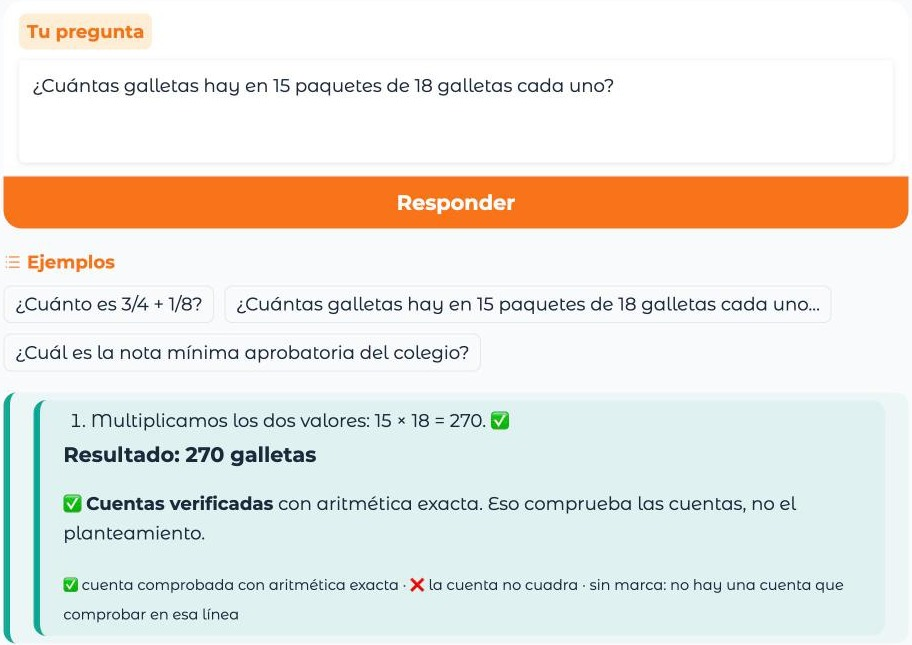
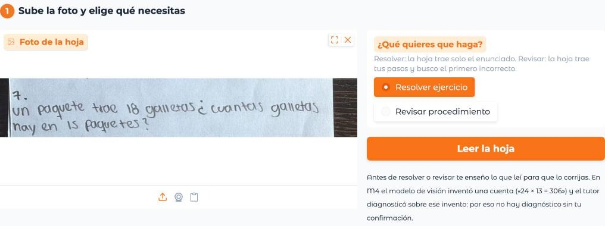
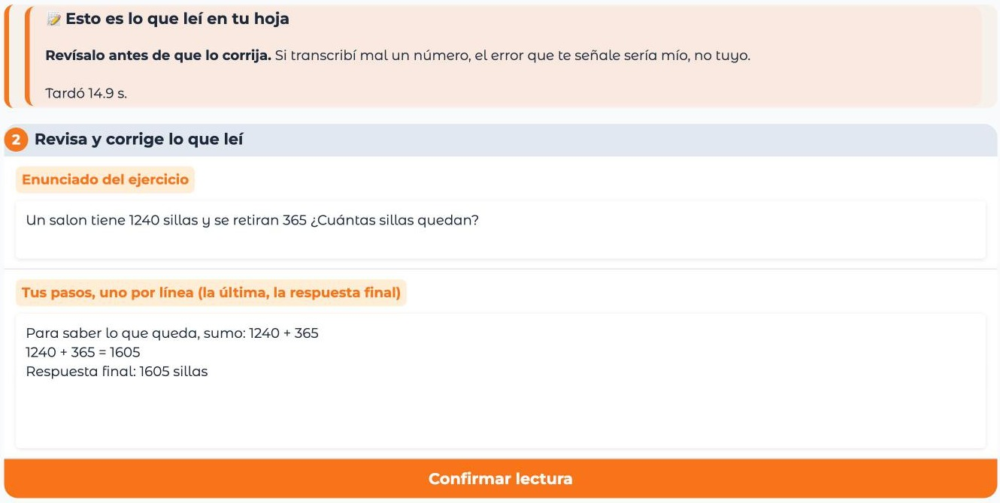
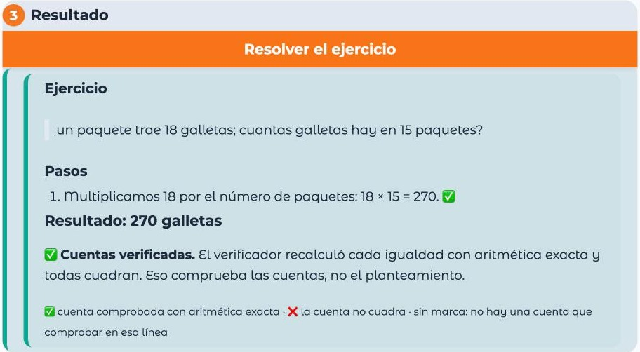
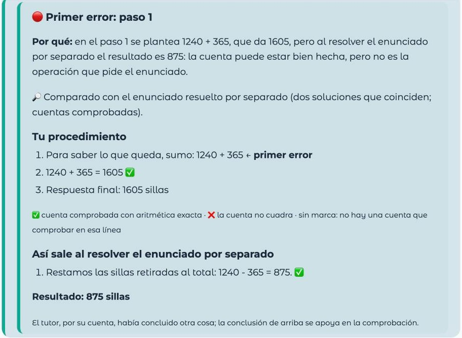
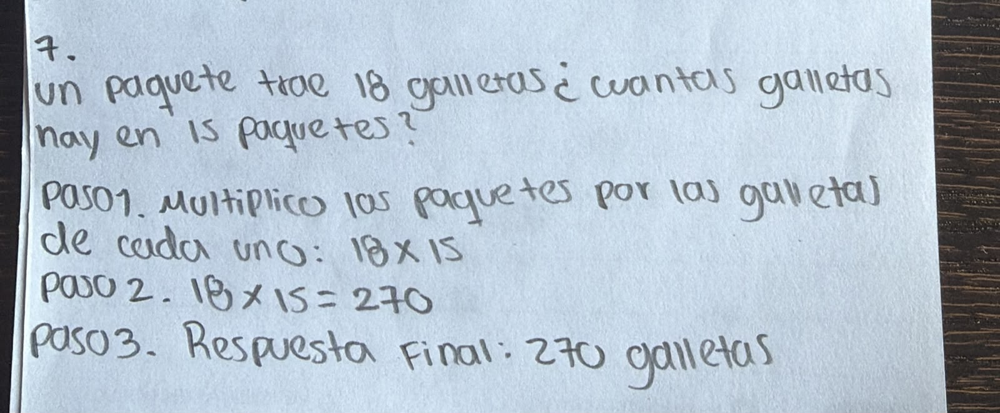
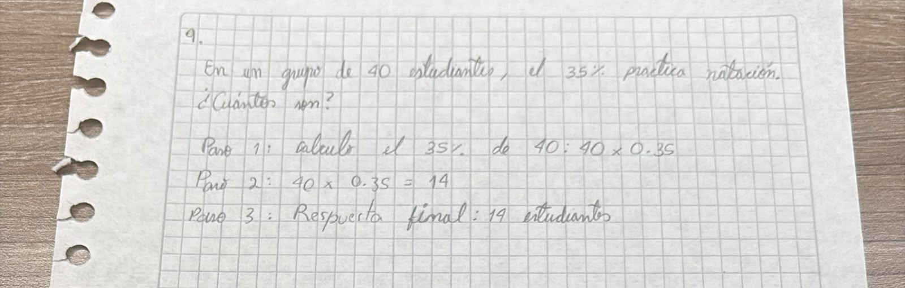

∫ f(x) dx
SI4006 · Universidad EAFIT · Demo Day
Del ejercicio
a la comprensión.
Un tutor de matemáticas que lee procedimientos, comprueba cuentas y explica qué puede concluir.
01 · El problema
El resultado puede ser correcto
y el procedimiento, no.
Un buen tutor no solo dice cuánto da.
Ayuda a entender por qué.
Estudiante
Pregunta en texto o comparte una foto del ejercicio.
Tutor
Resuelve paso a paso o revisa el procedimiento escrito.
Docente
Conserva la decisión pedagógica; el sistema es apoyo.
02 · Arquitectura del tutor
Una cadena de piezas observables.
RAG y herramientas según configuración
Visión, razonamiento y verificación cumplen funciones distintas.
03 · Pregunta escrita
Pasos numerados, resultado
y cuentas comprobadas.

CÓMO SE LEE LA RESPUESTA
15 × 18 = 270 ✅
✅ el verificador recalculó la cuenta con aritmética exacta.
❌ la cuenta no cuadra: no se da por buena.
Sin marca no había una cuenta que comprobar.
Comprueba cuentas, no el planteamiento. Es un caso puntual, no una medición de exactitud.
04 · De una foto al acompañamiento
Elegir qué necesitas, confirmar
lo leído y solo entonces ayudar.


05 · Resolver o revisar
Cada conclusión dice por qué
y qué está comprobado.


06 · Qué aportó cada experimento
Las mejoras se ganan
con evidencia.
M1 / M2 · CÁLCULO DIFÍCIL
Fine-tuned frente a baseline
12 casos; muestra pequeña, 4 aciertos netos.
M3 · S08-D
RAG híbrido + enrutador
2 alucinaciones; mejor resultado medido en ese conjunto.
M3 · C5-FT
Agente entrenado
Mejor uso de herramientas, pero no mayor exactitud global.
Aprendizaje: añadir agentes o herramientas no mejora automáticamente al tutor.
07 · La evaluación visual de M5
En las fotos legibles,
el resultado mejoró.
CORRIDA FINAL · 11 FOTOS
Resolver · 10/11 revisar
0 errores inventados en hojas sin error. m5v-10 quedó fuera.


Desarrollo sobre las mismas hojas usadas para iterar; aún no demuestra generalización.
08 · Qué falta y por qué
Los aciertos subieron;
quedan límites claros.
Fallo conocido
m5v-09 se sigue leyendo como 14 en vez de 19, en las dos lecturas: no hay discrepancia que enseñar y la revisión sale «sin error».
Generalizar
Las 11 fotos sirvieron para iterar. Hace falta validar con hojas manuscritas nuevas, separadas del desarrollo.
Despliegue
La demo corre en Kaggle T4 con un enlace Gradio temporal; falta un despliegue estable y medir la latencia con más usuarios.
09 · Cierre
Construimos, medimos
y aprendimos dónde mejorar.
El objetivo no es que la IA nunca se equivoque; es que sus respuestas sean comprobables y que reconozca sus límites.
Resolver 11/11 y revisar 10/11 en el set usado para iterar.
Comprueba igualdades, no decide por sí solo el planteamiento.
No está demostrado: las mismas 11 hojas guiaron las correcciones.
Corregir la lectura de m5v-09 y medir con hojas manuscritas nuevas, separadas del desarrollo.